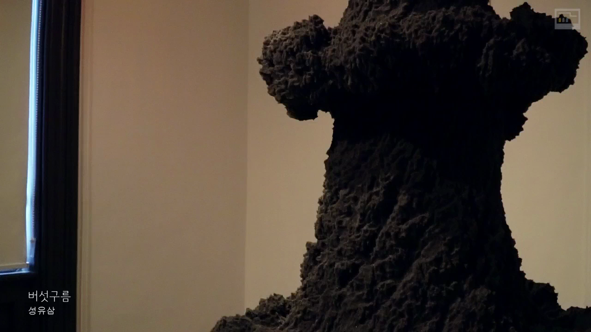

영상
날씨의 맛
18.06.12-18.09.30

<날씨의 맛>전은 일상 속의 날씨를 음미하고 날씨와 맺어온 역사와 미래에 대해 숙고하는 기회를 마련하고자 기획되었습니다.
o 전시기간 : 2018-06-12 ~ 2018-08-15
o 전시장소 : 남서울미술관 1층, 2층
최효준 서울시립미술관장 인사말 “<날씨의 맛>전은 일상 속의 날씨를 음미하고 날씨와 맺어온 역사와 미래에 대해 숙고하는 기회를 마련하고자 기획되었습니다”
참여작가 소개 김형중 작가님, 백정기 작님, 이소요 작가님, 임영주 작가님, 정하용 작가님,
김윤수 작가님 인사말 “대기의 흐름을 소리, 빛 등 시각, 촉각등을 통하여 보여줌으로서 시간에 따라 시시각각 변하는 날씨가 공간에 어우러 짐을 표현하였습니다.“
회양목 이소요
2018.6.12.-2018. 8. 15 날씨의 맛
서울시립 남서울 미술관
서울시립미술관 남서울 미술관
Tasters of Weather 날씨의 맛
반사된 소리 정만영
순환하는 소리2 정만영
트와일라잇 존 박여주
일요일 회화 바이런 킴
바람은 쉼이 없이 세상의 모든 경계를
어루만져준다 김윤수
바람의 표면 김윤수
달빛(4/3600시간의 파도) 김윤수
버섯구름 성유삼
무제 백정기
기우제: 카이로 백정기
기우제: 마하미드 백정기
대체로 맑음 임영주
무드 임영주
에코트론 V2.0 정화용, 김형중